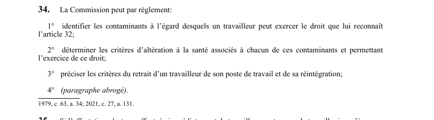

art-34-LSST : règlements retrait préventif CNESST
Un article du wiki ⚖️ Recueil législatif
En bref
La CNESST peut par règlement identifier les contaminants donnant droit au retrait préventif, déterminer les critères d'altération de la santé associés à chacun. Il s'agit d'une obligation.
🌐 LegisQuébec · 📄 PDF officiel (page 12)
Texte officiel : capture du PDF

Toucher l'image pour l'agrandir🔗 Ouvrir a cette page : LSST.pdf : page 12 · texte a jour au 26 mars 2024
Voir aussi
- art. 32 : retrait préventif pour contaminant · faculté : le travailleur qui fournit un certificat attestant que son exposition à un contaminant comporte pour lui des dangers peut demander d'être affecté à des tâches sans telle exposition, jusqu'à ce que son état de santé lui permette de réintégrer ses fonctions.
- art. 33 : délivrance certificat retrait préventif · obligation : le certificat peut être délivré par le médecin responsable des services de santé de l'établissement, par un autre médecin ou par une infirmière praticienne spécialisée ; si le certificat n'est pas délivré par le médecin responsable.
- art. 35 : affectation différée cessation travail · faculté : si l'affectation n'est pas effectuée immédiatement, le travailleur peut cesser de travailler jusqu'à ce que l'affectation soit faite ou que son état de santé et les conditions de son travail lui permettent de réintégrer ses fonctions conformément à l'article 32.
- art. 36 : rémunération pendant cessation de travail · droit : le travailleur a droit, pendant les cinq premiers jours ouvrables de cessation de travail, d'être rémunéré à son taux de salaire régulier, puis à l'indemnité de remplacement du revenu prévue par la Loi sur les accidents du travail et les maladies professionnelles.
- 🔧 Modifié par : LMRSST · Article modificateur de la LMRSST.
- ↑ Loi : LSST
Pages qui pointent ici (5)
- art-131-LMRSST : modifie l'art. 34 LSST Recueil législatif
- art-32-LSST : retrait préventif pour contaminant Recueil législatif
- art-33-LSST : délivrance certificat retrait préventif Recueil législatif
- art-35-LSST : affectation différée cessation travail Recueil législatif
- art-36-LSST : rémunération pendant cessation de travail Recueil législatif